Welcome to Joaquin Niles' portfolio website :3c
I'm a technical artist that focuses on stylized non-photorealistic 3D art aesthetics. My main focus is with shaders, vfx, and game optimization.
Check out my games and projects below
please enjoy your stay
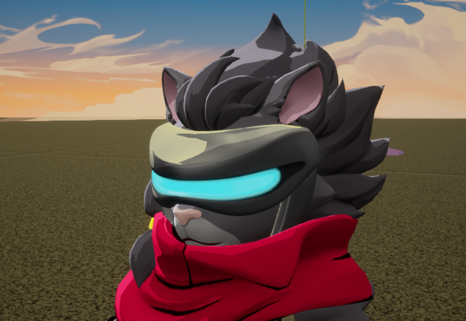
Rivals 2 character Clairen with improved shading under harsh warm lighting
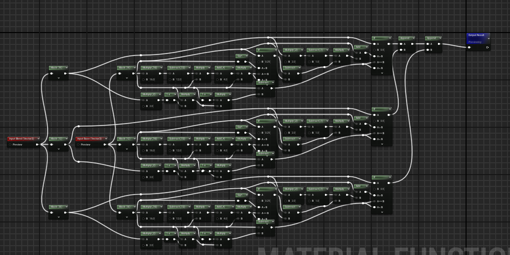
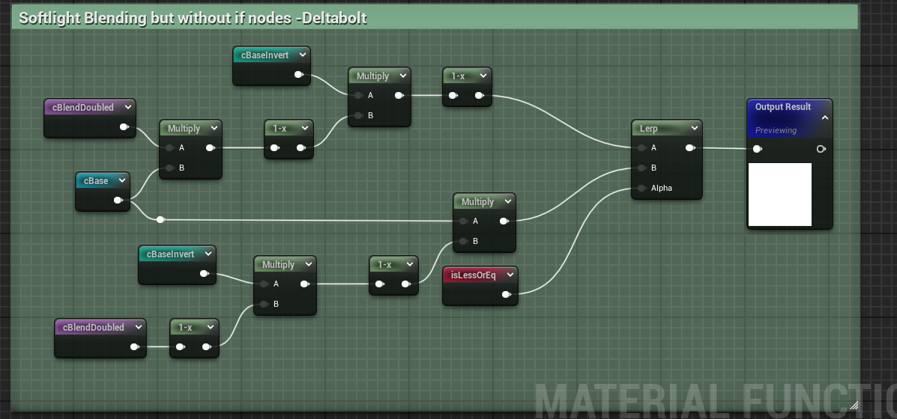
default softlight color blending versus optimized version made by me
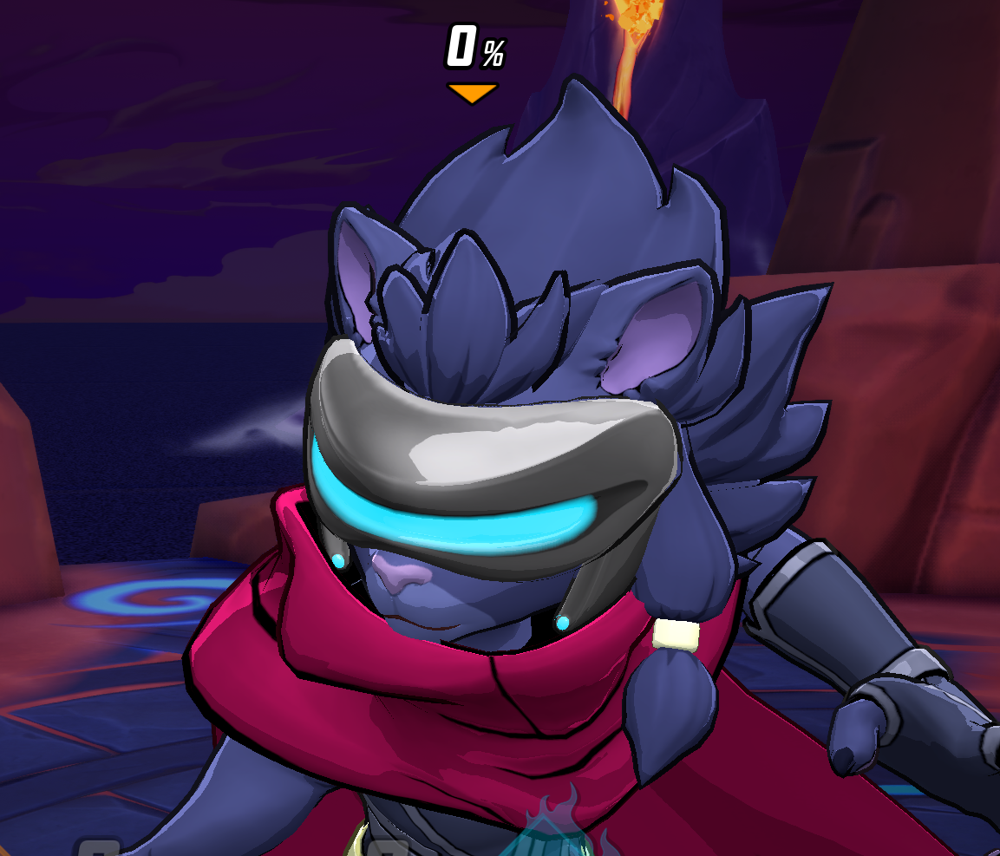
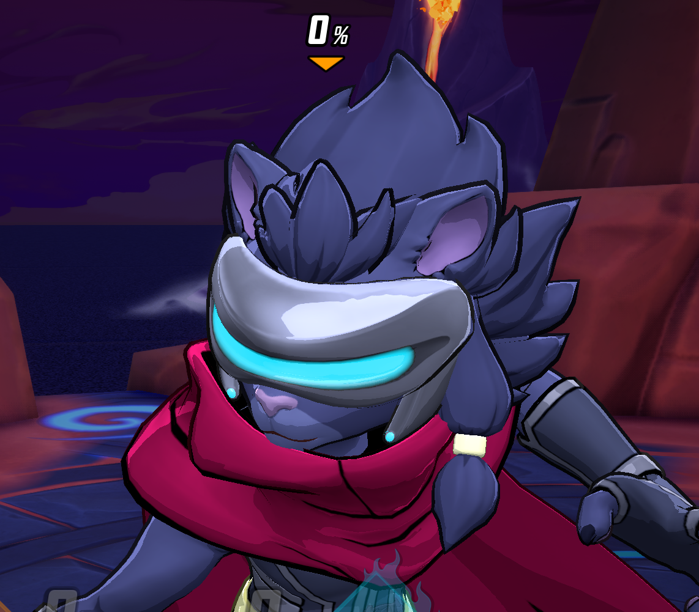
metallic lighting color blending disabled versus enabled under harsh cool lighting
RIVALS OF AETHER 2 STEAM WORKSHOP CONTENT
Major character lighting rework and optimization
(made in unreal engine 5)
Contributions include:
- Researched and implemented HLSL hooks to grab scene lighting data without engine modifications or changing proprietary blueprints or code
- Wrote shaders to blend stage lighting with character models without darkening the mesh in order to keep readability
- Significantly improved rendering times by optimizing the in-engine color blending algorithms to avoid unnecessary branching GPU calculations
- Reworked metallic rendering to reflect the scene lighting without breaking the original artistic direction
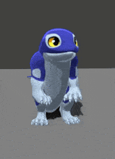
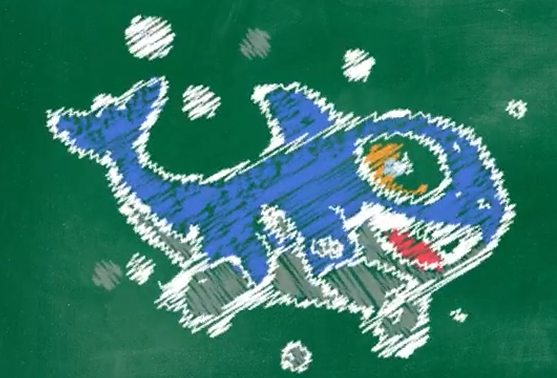
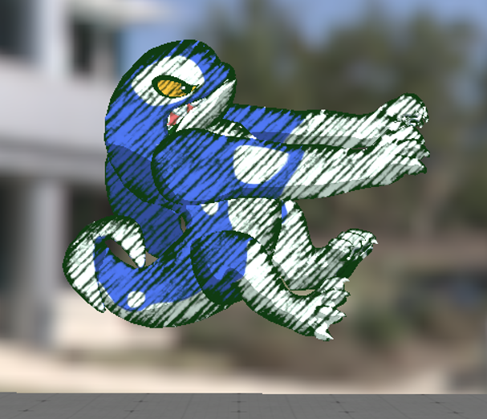
default Orcane character model skin, 101 tutorial video reference image, and result
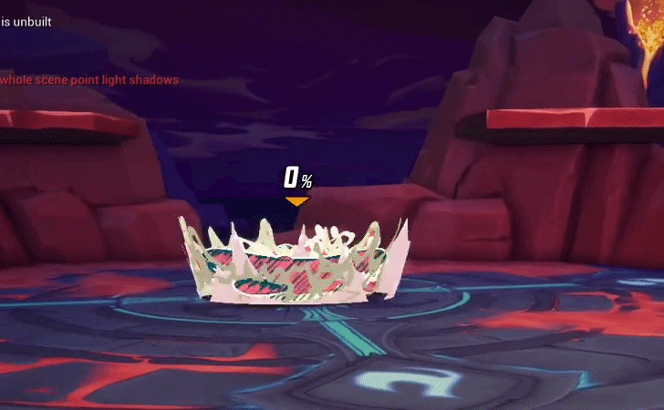
101 Orcane skin cosmetic in action
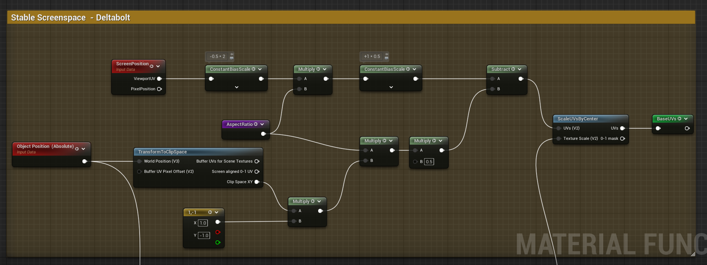
stable screen space projection shadergraph
RIVALS OF AETHER 2 STEAM WORKSHOP CONTENT
Custom character skin cosmetic based on the character 101 tutorial videos
(made in unreal engine 5)
Contributions include:
- 4D detail map made by myself in substance designer
- Providing artistic control over shader features such as edge feathering and chalk density
- Stable projection for minimal detail map distortion with camera FOV changes
- Full compatibility with the color mapper, with chalkboard background colors included for easy palette creation
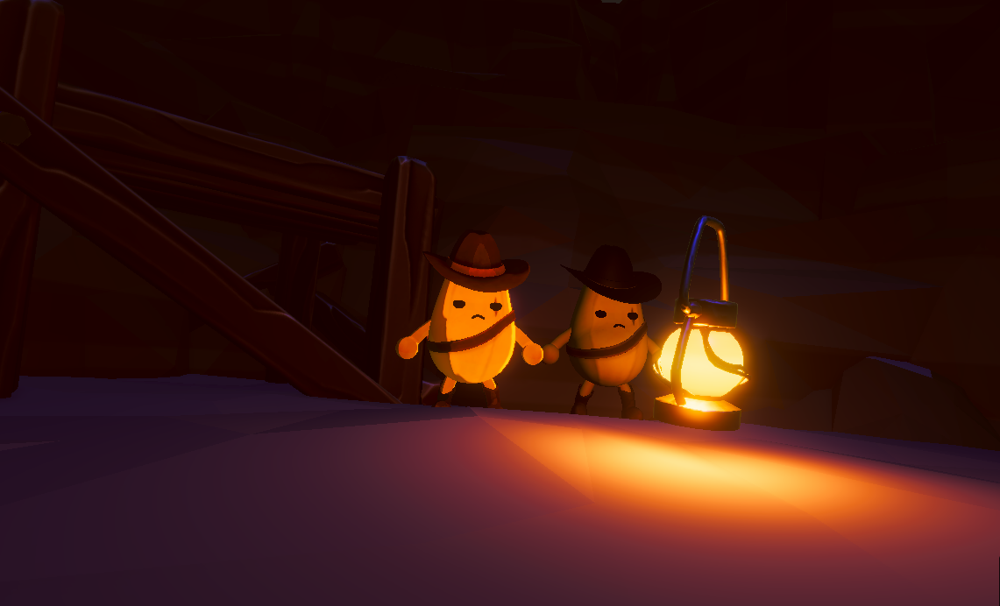
banana cowboy stylized art aesthetic concept with base shader reference on the right
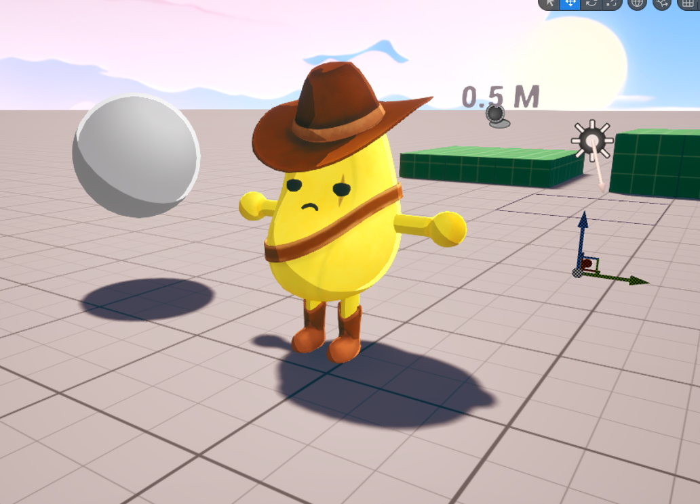
banana cowboy current toon shader implementation

unreal engine stylized grass foliage in-game stress test
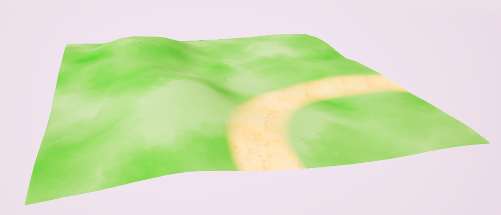
watercolor stylized grass currently used in game. Implemented into landscape shader for texture painting
ACTION ADVENTURE PLATFORMER: Banana Cowboy - The Wild Bunch (work in progress)
Betrayed by his friends during a botched train heist, Banana Cowboy reinvents himself as a deputy on the tiny planet of Durian Gap. Life is good out on the galactic frontier… until the past comes knocking. Now, Banana Cowboy races to catch his former comrades before the law can catch him
(made in unreal engine 5)
Contributions include:
- Creating stylized shaders according to artistic needs
- Creating visual effects and their needed components such as meshes/maps
- Researching and implementing optimizations in preparations for a switch port
- Writing automated profiling tests with the Unreal Engine Insights tool and Automation Testing Framework
- Working with animation timelines and static mesh sockets to time effects for cutscenes
- Debugging many material and animation related bugs
Check out the game here:

STOMACH psx shader and post-processing concept scene with rigged fish model in-engine
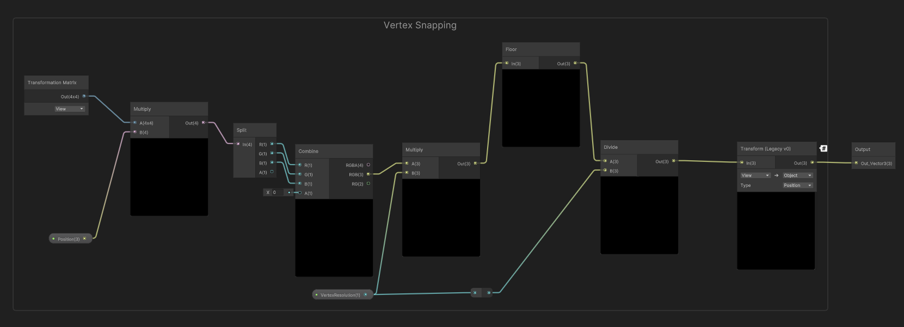
psx style vertex snapping math
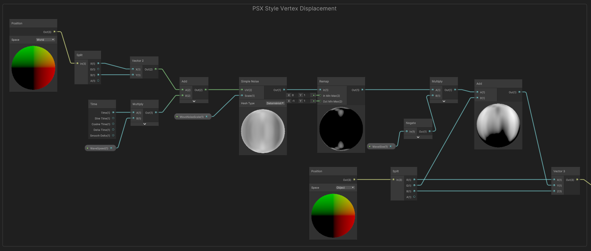
psx vertex displacement math for our water shader. Implemented to tile in world space to prevent seams
FIRST PERSON SURVIVAL HORROR GAME: STOMACH (2025)
STOMACH is a first-person survival horror cooking game located in a cruise ship with PS1 inspired graphics to capture that retro horror feeling. Your task is to read a food order, search for food ingredients, and make it back safely to the kitchen to cook your ingredients before time runs out
(made in unity engine)
Contributions include:
- Implementing several rendering features to achieve our desired artistic goals while meeting performance benchmarks
- Fixing outdated shader code brought in from public repositories and updating for our engine version
- Researching and re-implementing various PS1 hardware quirks for added authenticity
- Implementing solutions for complex graphical effects using stencil buffers and script-material interactions
- Creating a pipeline for artists to follow when creating assets or iterating on existing assets
Check out the game here:
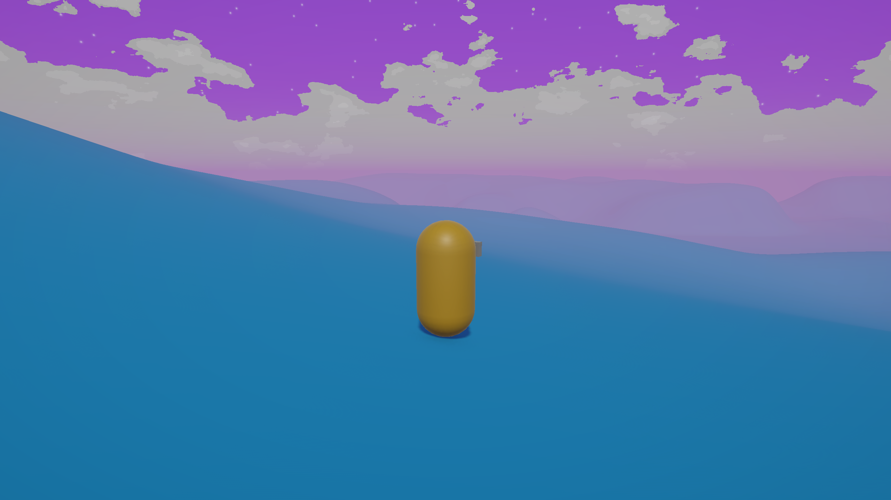
procedurally generated terrain as it looks in-game
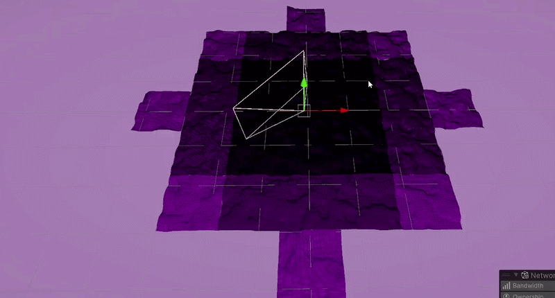
terrain chunk LOD polygon density visualized using wireframe mode
TECH DEMO: Descent (2025)
Descent is my personal descent into learning procedural terrain generation techniques. It utilizes both hlsl and C# to procedurally generate noise based terrain with multiple optimizations to improve performance, and it's multiplayer :P
(made in unity engine)
Features include:
- Infinitely generating terrain, with generation modifiers controlled by scriptable objects in-engine
- Optimizations such as chunking, LODs, and chunk streaming to improve performance and memory management
- Renders the chunk borders between LOD changes at a higher resolution to help mask stitching
- Implemented multithreading to separate gameplay and terrain rendering threads for performance
- Implemented Steamworks networking API to allow friends with a build of the game to join eachother on Steam
Check out the source code at the git repo here:
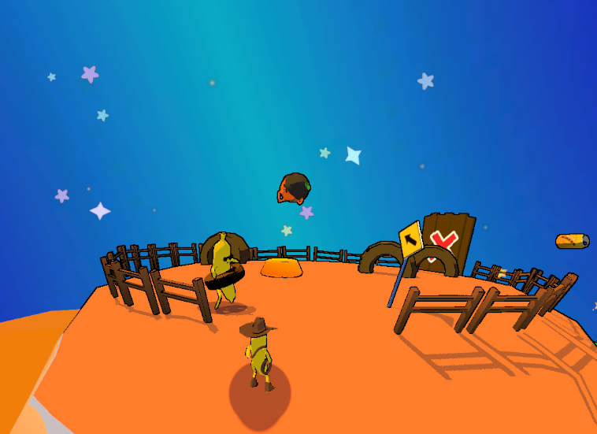
banana cowboy (2024) stylized art showcase screenshot
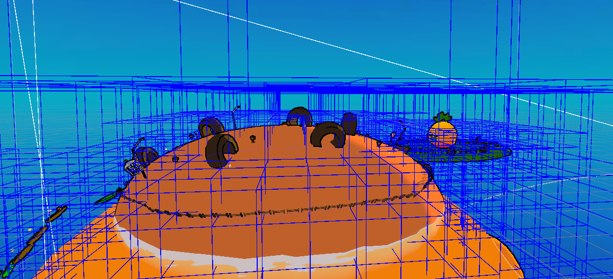
camera occlusion culling data visualized in-engine
ACTION ADVENTURE PLATFORMER: Banana Cowboy (2024)
The original Banana Cowboy game! Play as Banana Cowboy and adventure in fruit-themed universe, rescuing your people from your evil twin who has taken over the Banana Kingdom. Use your trusty lasso and spaceship horse to travel to the Orange Biker and Blueberry Pirate planets and save the universe from the Evil King
(made in unity engine)
Contributions include:
- Creating character and environmental shaders
- Creating visual effects for the game
- Benchmarking the graphical performance of our game using the Unity Profiler and implementing a frustum-culling solution to improve rendering times
Check out the game here:
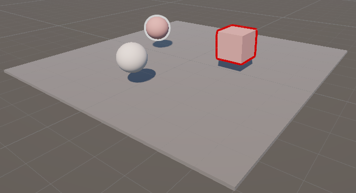
open source optimized highlight outline render feature solution for Unity 6.0+
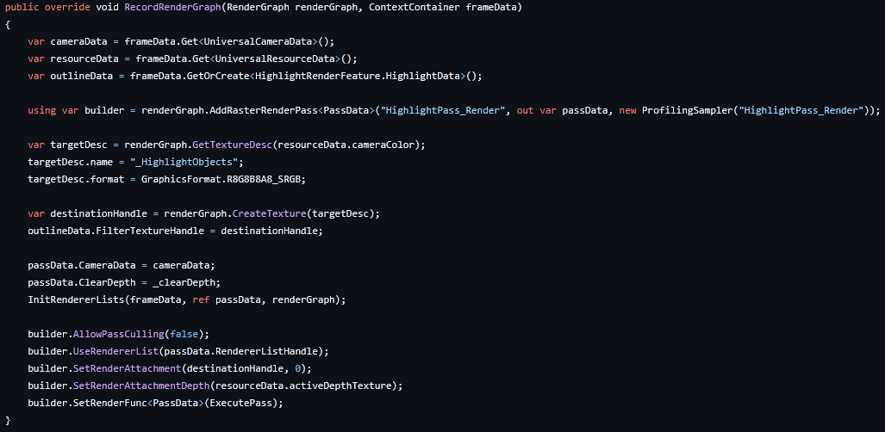
a render texture is created using filter data that only shows objects to be highlighted with respect to depth settings
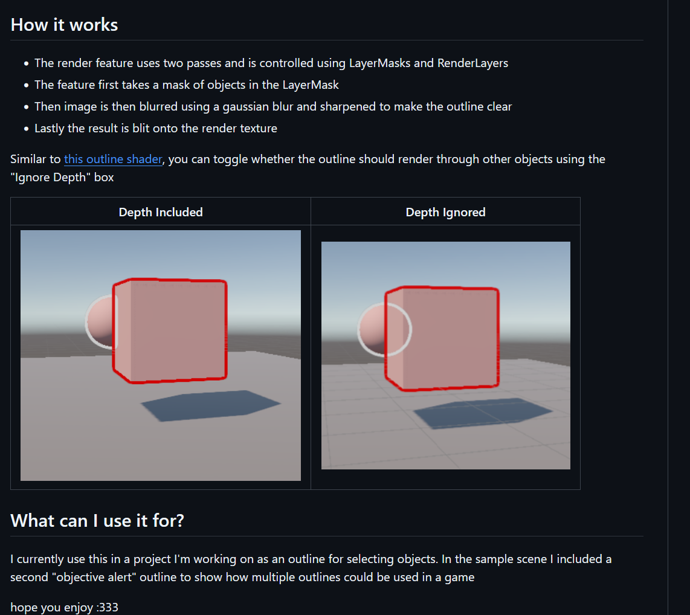
render feature explanation as seen on my github
UNITY RENDER FEATURE: Lightweight Highlight Selection Outline (2026)
A lightweight selection outline Unity 6.0 render feature. Uses both shadergraph and hlsl code to create a seamless post-processing highlight outline
Features include:
- Custom render feature optimized for highlighting objects that bypasses using expensive edge-detection algorithms
- The ability to make a mask of what render layers are targeted by the render feature
- The ability to make outlines ignore scene depth
Check out the source code at the git repo here:
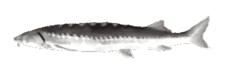
:3">